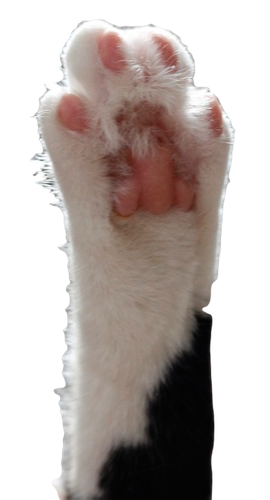

<link rel="import" href="../../bower_components/polymer/polymer.html">

<polymer-element name="cat-paw" attributes="">
  <template>
  	<!-- Image courtesy of http://www.cathelper.com/wp-content/uploads/2012/01/hind_paw.jpg -->
  	
    <style>
      polyfill-next-selector { content: 'img'; }
      img {
        max-height: 100%;
        max-width: 50%;
        position: fixed;
        bottom: 0;
        right: 0;
        -webkit-animation: creepy 3s infinite alternate ease-in-out;
        animation: creepy 3s infinite alternate ease-in-out;
      }
      :host {
        display: block;
      }

      @-webkit-keyframes creepy {
        from { 
          -webkit-transform: translateX(20px) translateY(20px); 
          transform: translateX(20px) translateY(20px); 
        }
        25% { 
          -webkit-transform: translateX(20px) translateY(0); 
          transform: translateX(20px) translateY(0); 
        }
        50% { 
          -webkit-transform: translateX(10px) translateY(10px); 
          transform: translateX(10px) translateY(10px); 
        }
        to {
          -webkit-transform: translateX(0) translateY(0);
          transform: translateX(0) translateY(0); 
        }
      }

      @keyframes creepy {
        from { 
          -webkit-transform: translateX(20px) translateY(20px); 
          transform: translateX(20px) translateY(20px); 
        }
        25% { 
          -webkit-transform: translateX(20px) translateY(0); 
          transform: translateX(20px) translateY(0); 
        }
        50% { 
          -webkit-transform: translateX(10px) translateY(10px); 
          transform: translateX(10px) translateY(10px); 
        }
        to {
          -webkit-transform: translateX(0) translateY(0);
          transform: translateX(0) translateY(0); 
        }
      }
    </style>
  </template>
  <script>
    Polymer({ });
  </script>
</polymer-element>
